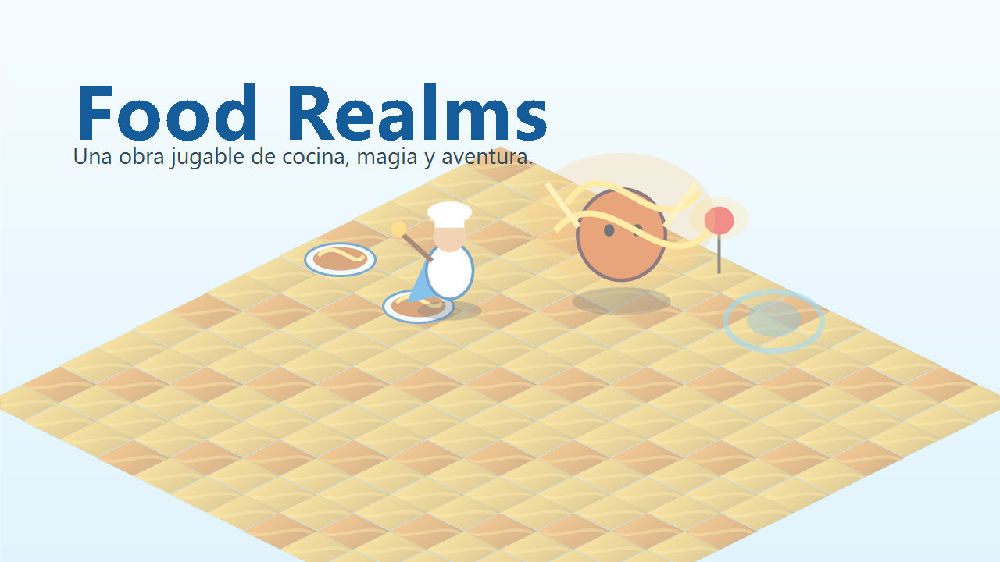
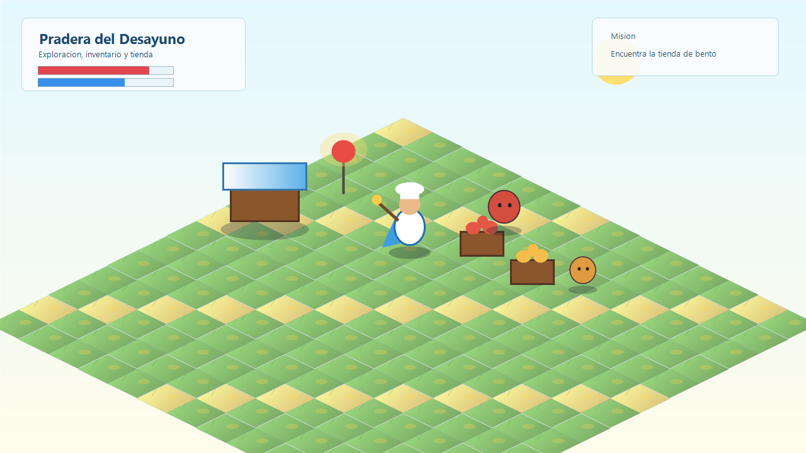
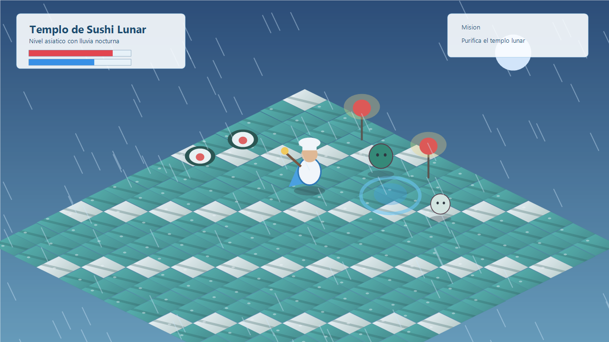
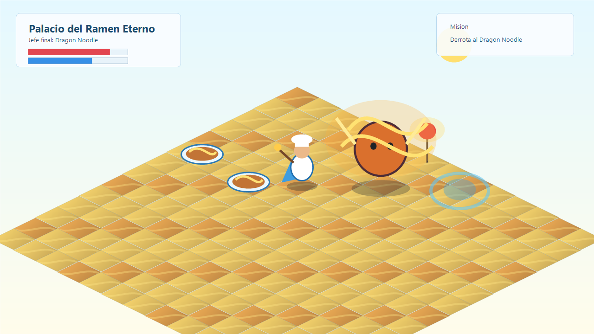

Explorar
Recorrer reinos de comida, encontrar puestos, portales e ingredientes legendarios.

RPG 3D ejecutable para Windows
Una aventura minimalista por fuera y gigantesca por dentro: mundos de comida, clima vivo, magia culinaria, tiendas, inventario, misiones y jefes que convierten cada textura en parte de la historia.
Jugar ahoraUna obra jugable
Food Realms imagina la comida como si fuera arquitectura fantastica: praderas de desayuno, mercados de bento, bosques de pizza, templos de sushi y palacios de ramen. Su fuerza esta en mirar ingredientes cotidianos como si fueran materiales nobles de un mundo heroico.
Creado por Nicolas Herguera.
Capturas oficiales



Ventajas
Objetivos
Recorrer reinos de comida, encontrar puestos, portales e ingredientes legendarios.
Comprar pociones, subir ataque, reforzar armadura y potenciar magia culinaria.
Derrotar jefes tematicos hasta llegar al Dragon Noodle y restaurar los reinos.